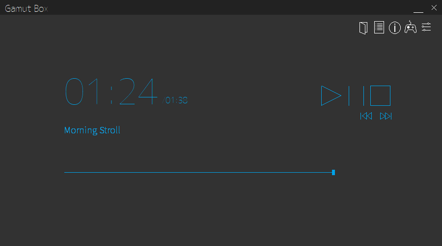
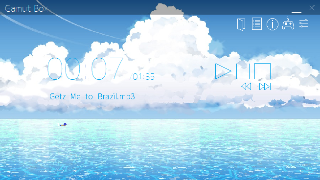
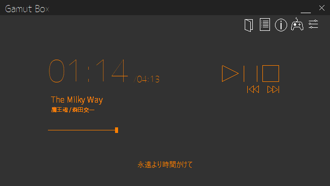
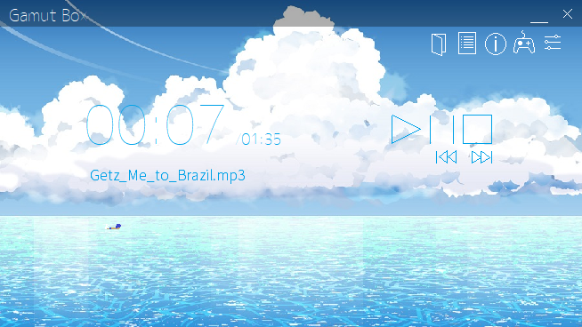
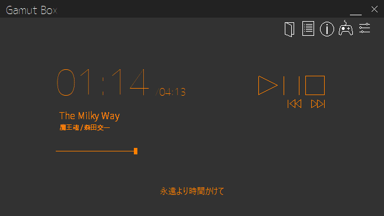

Gamut Boxは、MCI（Media Control Interface）という技術を利用した音楽プレイヤーアプリです。
通常のGamut Boxとミニサイズ版のGamut Box microの2種類があります。


最新版 : Ver.2.0.3


カスタマイズ機能
歌詞表示機能
リスト再生機能
推奨動作環境
最新版 : Ver.2.0.3
シンプル、でも万能。
大迫力の大きなウィンドウで、自分好みにカスタマイズして好きな曲を聴きましょう。
mp3, wav, wma, asf, midiに対応しており、歌詞ファイルの作成・表示、背景色や文字色の設定、
テーマの設定、更にはイントロクイズで遊ぶことも可能です。
もちろん、ウィンドウを小さくすることも出来ます。
最新版 : Ver.2.0.3


カスタマイズ機能
フォント、背景画像、色などを変更することができます。
歌詞表示機能
曲の歌詞ファイルを作成し、歌詞を表示させることができます。
また、Walkmanの歌詞ファイル（lrc形式）を共用することができます。
リスト再生機能
リストを作成して再生することができます。
シャッフルすることも可能です。
推奨動作環境
OS : Windows 7, Windows 8 / 8.1, Windows 10
最新版 : Ver.2.0.3